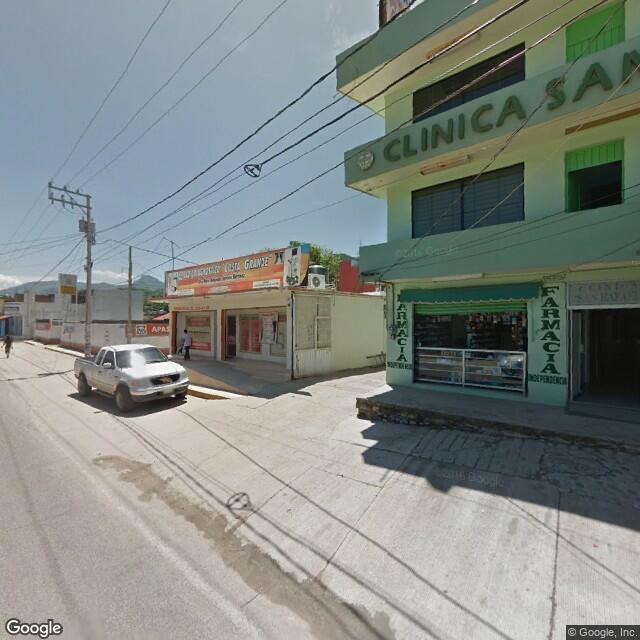

Ubicación Acapulco
Avenida Farallón 1, Col. La Garita, Acapulco, Guerrero.
Ver mapaAvenida Farallón 1, Col. La Garita, Acapulco, Guerrero.
Ver mapa
Avenida Independencia 76, Col. El Fortín, Tecpan de Galeana, Guerrero.
Ver mapaLa vía más directa para solicitar información y disponibilidad.
Abrir WhatsAppcontacto@draerikaabarca.com
Enviar correoSí, puedes escribir por WhatsApp para resolver dudas generales.
No. También existe videoconsulta previa cita según el caso.
Sí, además de población adulta.